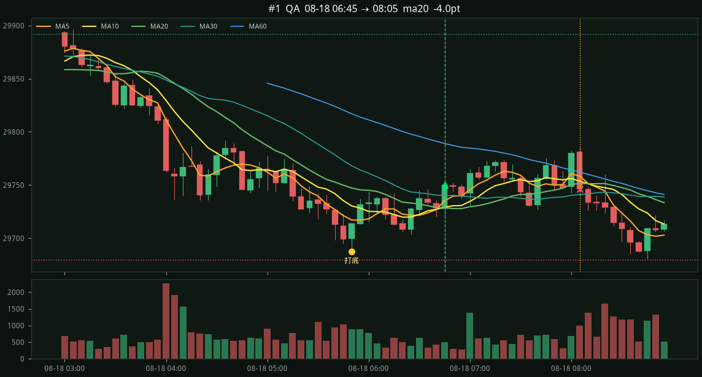
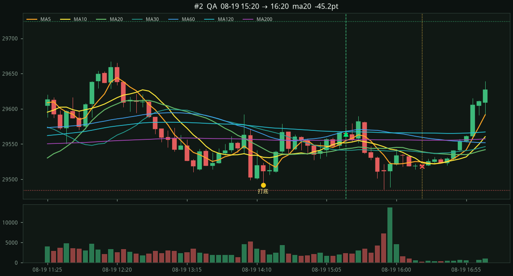
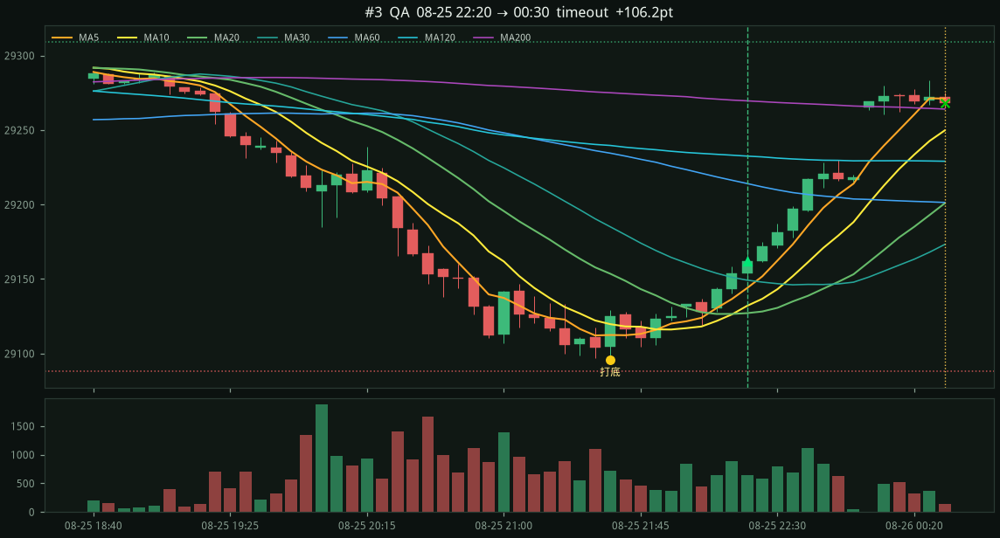

#1 · QA2026-08-18 06:45 → 08-18 08:05
-4.0 pts
entry 29750.00 stop 29679.25 (−70.8 pts) target 29891.50 (2.0R) exit 29746.00 ma20 打底 29687.25 ← 高點 29841.00 (−153.8) 收回 41% · 帶寬 MA5−MA20 6.7 MA5 29735.3 > MA10 29729.0 > MA20 29728.7

8d · 2026-08-18 00:05 → 2026-08-26 00:30 ET · bars=1638 · 五分 K
下跌打底（≥6 根不破底）後，第一次 MA5>MA10>MA20 且收盤站上 MA5 進場。停損打底低下方，目標 2R；0.6R 保本、1.2R 移動；12 根後收盤跌破 MA20 出場。含夜盤。
邊緣：截圖那種 08-25 夜盤能抓到，但勝率不高，要靠少數大賺把停損補回來。
QA 3筆 +57.0
漏斗：波段低 134 → 跌夠 74 → 打底 38 → 多排翻轉 31 → 進場 3（沒打底 31 · 破底 25 · 帶太開 1 · 收回過多 0 · 風險 15）
entry 29750.00 stop 29679.25 (−70.8 pts) target 29891.50 (2.0R) exit 29746.00 ma20 打底 29687.25 ← 高點 29841.00 (−153.8) 收回 41% · 帶寬 MA5−MA20 6.7 MA5 29735.3 > MA10 29729.0 > MA20 29728.7

entry 29564.00 stop 29484.00 (−80.0 pts) target 29724.00 (2.0R) exit 29518.75 ma20 打底 29492.00 ← 高點 29667.25 (−175.2) 收回 41% · 帶寬 MA5−MA20 11.4 MA5 29554.8 > MA10 29551.6 > MA20 29543.4

entry 29161.75 stop 29088.00 (−73.8 pts) target 29309.25 (2.0R) exit 29268.00 timeout 打底 29096.00 ← 高點 29248.50 (−152.5) 收回 43% · 帶寬 MA5−MA20 16.8 MA5 29144.0 > MA10 29132.0 > MA20 29127.1
